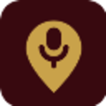
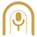
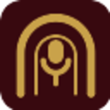
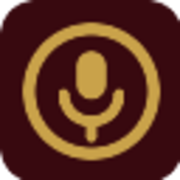

Drie logo’s
Alle drie in goud op gordijnrood, alle drie met een microfoon erin. Kijk vooral naar het tabblad-formaat: dat is waar een logo het snelst uit elkaar valt. Zeg welke je wilt, dan zet ik hem op de hele site en als favicon.
A
Het speldje
Een kaartspeld met een microfoon erin. Vertelt precies wat de site doet: podcasts, en waar ze spelen. Sluit aan bij de speldjes op je kaart.
Het merk
In de balk
Als tabblad
Podcast Liveshows
Formaten

B
De theaterboog
Een toneelboog met een microfoon eronder, met een zweem van een tweede boog als gordijn. Het meest ‘theater’ van de drie, maar ook het fijnst getekend.
Het merk

In de balk
Podcast Liveshows
Als tabblad
Podcast Liveshows
Formaten

C
De capsule
Een microfoon in een gouden ring. Het simpelst en daardoor het scherpst op klein formaat — maar het zegt niets over theater.
Het merk
In de balk
Podcast Liveshows
Als tabblad
Podcast Liveshows
Formaten
